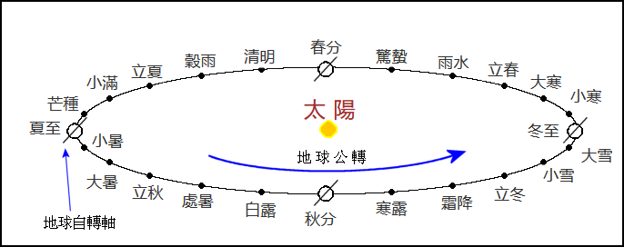

初稿: 2018年10月 最近一次重大修訂: 2019年4月
從地球上看，太陽相對於恆星的位置不斷向東移動，一年行一週。太陽在天球上的運動軌跡是一個大圓，稱為黃道，黃道其實是地球公轉軌道投射在天球上的大圓。在古代，太陽在黃道上的位置是用圭表測量正午時日影的長度而定。這裡正午是指太陽位於正南方位的時刻(假設觀測站位於北回歸線以北)。正午日影最長的一日稱為冬至。從冬至到下一個冬至的時間稱為一「歲」，而從農曆正月初一到下一年正月初一的時間稱為一「年」。現在除了提及年齡外，很少會用歲說時間，而年則一般指公曆的一年。
從冬至起，可將黃道等分二十四段，二十四段的邊界有二十四點。二十四節氣就是太陽通過這二十四點的時刻。我們知道太陽在天球上的視運動是因為地球繞太陽公轉的緣故。如下圖所示，可以設想二十四節氣是地球通過其公轉軌道二十四個點的時刻。地球的自轉軸並不與其公轉軌道垂直，這就是季節的成因，也是正午時日影長度變化的原因。

用現代天文學的術語來說，二十四節氣是太陽的地心視黃經λs 是15°的整數倍的時刻。下表列出二十四節氣的名稱﹑太陽的地心視黃經和公曆的近似日期。
| 節氣 | 太陽地心視黃經 | 近似公曆日期 |
|---|---|---|
| 立春 (正月節) | 315° | 2月4日 |
| 雨水 (正月中) | 330° | 2月19日 |
| 驚蟄 (二月節) | 345° | 3月6日 |
| 春分 (二月中) | 0° | 3月21日 |
| 清明 (三月節) | 15° | 4月5日 |
| 穀雨 (三月中) | 30° | 4月20日 |
| 立夏 (四月節) | 45° | 5月6日 |
| 小滿 (四月中) | 60° | 5月21日 |
| 芒種 (五月節) | 75° | 6月6日 |
| 夏至 (五月中) | 90° | 6月22日 |
| 小暑 (六月節) | 105° | 7月7日 |
| 大暑 (六月中) | 120° | 7月23日 |
| 立秋 (七月節) | 135° | 8月8日 |
| 處暑 (七月中) | 150° | 8月23日 |
| 白露 (八月節) | 165° | 9月8日 |
| 秋分 (八月中) | 180° | 9月23日 |
| 寒露 (九月節) | 195° | 10月8日 |
| 霜降 (九月中) | 210° | 10月23日 |
| 立冬 (十月節) | 225° | 11月7日 |
| 小雪 (十月中) | 240° | 11月22日 |
| 大雪 (十一月節) | 255° | 12月7日 |
| 冬至 (十一月中) | 270° | 12月22日 |
| 小寒 (十二月節) | 285° | 1月6日 |
| 大寒 (十二月中) | 300° | 1月20日 |
由立春算起，單數的節氣稱為「節氣」(即 立春、驚蟄、清明、立夏、芒種、小暑、立秋、白露、寒露、立冬、大雪、小寒)，雙數的節氣稱為「中氣」(即 雨水、春分、穀雨、小滿、夏至、大暑、處暑、秋分、霜降、小雪、冬至、大寒)。表中三月中(氣)、四月節(氣)等是二十四節氣的別名，為明朝和清朝欽天監編的官方曆書所採用(見存世明清曆書，例如明嘉靖三年大統曆、清康熙九年時憲曆等)。注意正月節並不一定出現在正月、二月節也不一定在二月等。但除了少數例外，正月中一般在正月、二月中一般在二月等;而現代農曆法則規定十一月中(冬至)必定在十一月。
為了方便記憶二十四節氣，有人把二十四節氣順序每節氣各取一字編成以下歌訣:
春雨驚春清穀天
夏滿芒夏暑相連
秋處露秋寒霜降
冬雪雪冬小大寒
二十四節氣根據太陽在黃道的位置而定，屬陽曆。公曆也是陽曆，所以節氣的公曆日期每年只有一兩日變動。以往的日曆一般列出二十四節氣的農曆日期，所以不少人以為二十四節氣屬於陰曆或陰陽曆，其實不然。鑒於二十四節氣的公曆日期基本不變，有人把上面二十四節氣歌訣加上以下三句:
最多相差一兩天
上半年來六廿一
下半年來八廿三
上半年是指公曆1月到6月，下半年指公曆7月到12月。六、廿一、八、廿三也是指公曆的日期。
二十四節氣在農曆中有重要作用，農曆是陰陽曆，既考慮月亮盈虧變化也顧及季節交替。為使農曆月份不偏離季節交替的週期，農曆每三年左右要設一個閏月，閏月的安插是由中氣決定，詳情可參閱農曆編算法則網頁。
最早的完整二十四節氣名稱見於漢初的《淮南子‧天文訓》，名稱和次序和今天的完全一樣。《漢書‧律曆志》也記有二十四節氣，但是頭六個節氣次序與《淮南子‧天文訓》稍有不同:驚蟄在雨水之前、穀雨在清明之前，即立春、驚蟄、雨水、春分、穀雨、清明……。漢以後的歷朝二十四節氣名稱和次序有時略有改動，例如唐朝麟德曆將雨水和驚蟄次序顛倒，稱「驚蟄」為「啟蟄」，次序是立春、啟蟄、雨水、春分、清明…… (見《舊唐書‧曆志》或《新唐書‧曆志》);明鄭頒行的大統曆書將「驚蟄」和「穀雨」簡寫成「京直」和「谷雨」(見永曆二十五年大統曆、永曆三十年大統曆或永曆三十一年大統曆)。
本網站的二十四節氣名稱和順序一律依照《淮南子‧天文訓》。
上述二十四節氣以太陽走到黃道二十四個定點的時刻來定義，稱為「定氣」。順治二年(1645年)曆法改革前，二十四節氣的計算是把回歸年平分二十四段，每一段時刻就是一個節氣時刻，用這種方法來定義的二十四節氣稱為「平氣」。
根據平氣法，兩中氣相隔的時間是回歸年的十二分之一，即30.44日。農曆規定每月初一必定發生在朔日。所以即使有一個中氣(用平氣法來定)發生在初一零時，下一個中氣也要在三十日後，農曆一個月最多只能有三十日，所以下一個中氣必然發生在下一個月，由此可推出一個月最多只能含有一個中氣。順治曆改前的農曆月序由中氣決定:含雨水的月份定為正月、含春分的月份定為二月、含穀雨的月份定為三月等等。如果有農曆月不含中氣，該月就定為閏月。這置閏法則就是著名的「無中氣置閏法」。
順治曆改後，二十四節氣用定氣來定義，這使上述月序和無中氣置閏法則失效，因為一個月有可能含兩個中氣，而一歲內可能有一個以上的無中氣月。由定氣法所定義的二十四節氣時間間隔並不相等，這是由於地球公轉軌道是橢圓的，當地球接近太陽時運行比較快，兩節氣的時間間隔也比較短，當地球離太陽遠時運行比較慢，兩節氣的時間間隔也比較長。兩中氣的時間間隔最短是29.44日，最長是31.44日。由於有兩中氣的時間間隔短於三十日，一個月有可能出現兩個中氣。順治曆改後，農曆月的數序及置閏法則由一套較為複雜的法則來定，詳情可參閱本網站的農曆法則網頁。不過，一個月內含兩個中氣的情況很罕見，一百年只會出現兩三次。所以在大多數的情況下，含雨水的月份是正月、含春分的月份是二月、含穀雨的月份是三月等等。
平氣的二十四節氣時刻計算很簡單，只要知道某一節氣的時刻，其他節氣的時刻只須加上(回歸年時間/24)的整數倍。然而中國歷代曆法修改頻繁，每次改曆都會修改節氣時刻以符合當時的觀測數據，而且各曆法採用的歲實(即回歸年)都稍有不同。中國歷代的平氣時刻或可用分段線性函數表示。